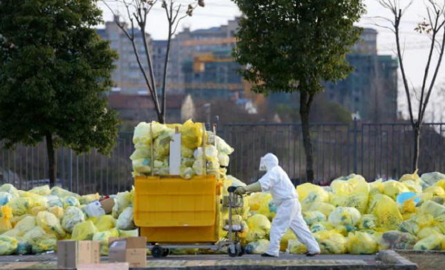

The coronavirus pandemic has affected almost every country globally causing national lockdowns, travel bans and stay at home orders. one of the firsts travel restrictions and lockdowns were implemented by China, Italy, Spain and other worst affected countries. Amidst the crisis, the pandemic has also brought about positve and negative impacts, especially to the environment. Here are some of the negativ and positve impacts that has affected all parts of the environment.

With reduced factory production, travel bans, and reduced consumption of fossil fuels, the air quality is found to be much higher than what it was a few months ago. This has created a rise in migration of birds, visuals of rarely seen mountains in India and overall improved air quality.
The agents/pollutants that decreased to cause such an impact are:
Nitrogen dioxide
Particulate matter pollutants
The reduction of these gases were the most abundant in China and are as follows in statistics:
| YEAR | DENSITY OF NITROGEN DIOXIDE(ymol/m2) |
| 2019 | 220,000 |
| 2020 | 100,000 |
The animals and birds in the wilderness are absolutely thriving as cities become peaceful and quieten down. As people were asked to stay home during the national lockdowns, animals of different species were to be found wandering in the normally busy streets in urban settlements. Breeding amongst such specieshas also widely increased across the globe due to the lack of disturbances and peace. However, environmentalists and conservationalists worry about illegal poaching of rare species especially in sanctuaries.
.jpg)
.jpg)
Wild animals found on usually busy streets..
Water in canals have cleared, which has lead to the experiencing of greater water flow and increaed in water clarity. This is due to the settling of sediments caused by lack of fishing boats in ports etc. Breeding seasons have extended as rare species of turtles now breed on the shores of Mumbai, like never before.
.jpg)
.jpg)
.jpg)
With lockdowns and stay at home restrictions, the waste management sector faces backlash as the amount of workers reduce to atleast 50%. Especially, now that the pandemic is still on, domestic waste dramatically increases as commercial waste plummets. Moreover, countries are forced to ask residents to quit the segregation of waste to prevent the spreading of the virus. Since segregation of waste is a main part of waste management, this only makes it more difficult to control such large amount of mismanaged waste.
Adding on to the bad news, the levels of plastics used, especially in the medical fields have significantly risen due to obvious reasons, causing a rise in plastic waste. With no recylcing or refining plants open for work, plastic waste causing uncontrollable damage to the Earth, increases.
.jpg)
.jpg)
Is this short or long term..?
It is bound for the economy to bounce back into action once the pandemic subsides and this will result in the kickstart of the aviation and the production industry globally. Meaning that the flourishing of the environment is temporary with the rturn of high carbon and nitrogen emissions, gloal warming and so on. In order to sustain the current situation and maintain the lowered pollution levels of our environment, sufficient regulations that are achievable must be imlplemented by countries in usion now that we know the immediate effects of such actions.